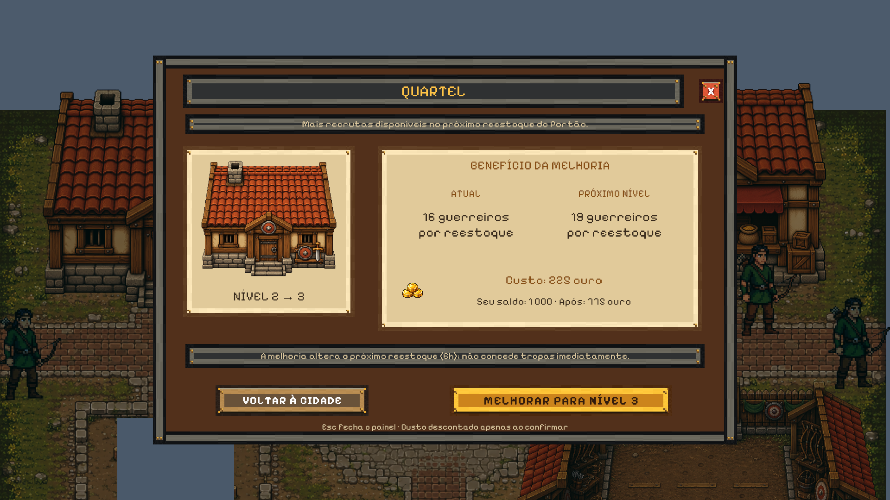

Centro — etapa 1: modais dos edifícios
O modal do Quartel, Mercado Local, Taverna, Estande de Arqueiros e Escola de Magia agora usa o template aprovado. Nível, benefícios, custo e saldo vêm dos serviços reais do jogo.
As imagens abaixo usam dados fixos para comparar a composição. A coluna da direita captura o prefab de produção conectado à cena Centro. A baseline da esquerda foi preservada a partir da aprovação do protótipo.
Validação: 1/1 teste funcional passou, cobrindo os cinco edifícios e o fechamento por Esc. As 9/9 capturas passaram na comparação com a baseline, em 1920 × 1080 e 1366 × 768. O teste funcional usou uma partida em memória.
Entrega e validação · Comparação visual automatizada · Proposta aprovada
Protótipo aprovado

Referência visual preservada.
Integrado ao jogo
 Mesmo layout; dados e ações conectados à construção e melhoria.
Mesmo layout; dados e ações conectados à construção e melhoria.Para testar: abra a cena Centro, entre no modo de jogo e interaja com um edifício. Use Construir/Melhorar para a ação principal; X, Voltar à cidade ou Esc para sair.
Impostos e seus prompts já foram aplicados: ver etapa 2. Viagens e alertas compartilhados serão conferidos no conjunto final.